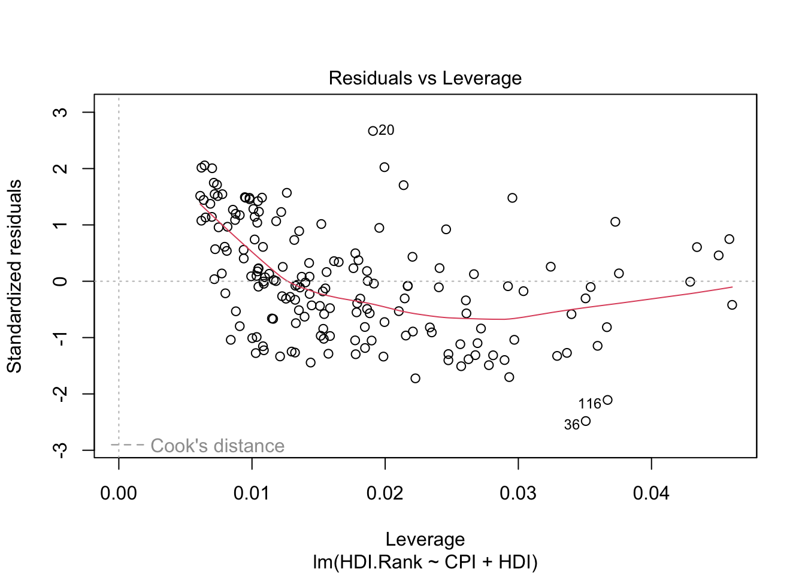
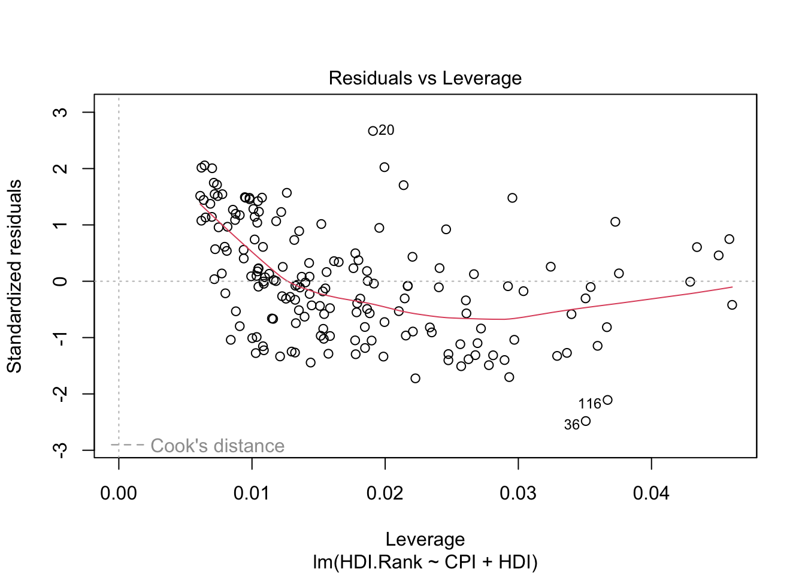
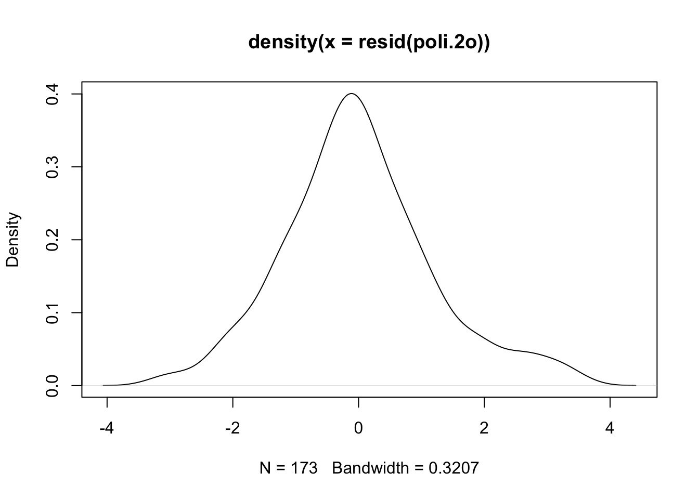
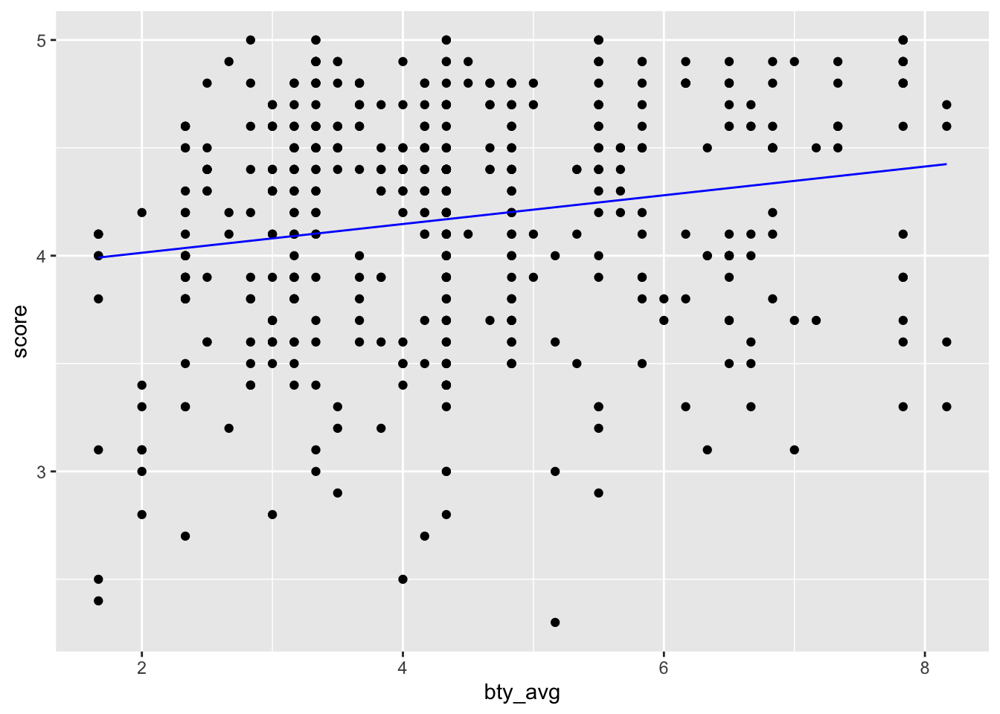

Capítulo 5 Modelling techniques
There are two types of basic numerical techniques: interpolation and approximation (adjustment).
- The goal is to get a function that fits the best of your ability to a set of data (a cloud of data) from observations, data collected from sensors, datasets, etc.
- The simplest fitting model is the linear model (LM) named in Machine Learning community as linear regression.

- Although regression is probably the most simple approach for supervised learning, linear regression is still a useful and widely used statistical learning method.
- Other more complex statistical learning approaches are generalizations of linear regression.
5.1 Interpolation
The normal input is a data table \[\{(x_i,y_i)\}\]
And the goal is to find an interpolating function \[ \phi(x)=a_0+a_{1}f_{1}(x)\] (the easiest approach considers polynomial functions \(f_1(x)=x\)).
Then, the model will be:
\[ \phi(x)=a_0+a_{1}x\]
Existence and uniqueness of the solution
Simply, if we consider that \(\phi(x)\) verifies the conditions \((x_i,y_i)\), the following linear system is buit:
\[ \left. \begin{array}{ll}
a_0+a_{1}x_{1}&=y_{1}\\
a_0+a_{1}x_{2}&=y_{2}\\
\ldots&\ldots\\
a_0+a_{1}x_{m}&=y_{m}\\
\end{array}\right\}\]
Solving the system above, the coefficients \(a_0\) and \(a_{1}\) are obtained (if they exist) and we will have the Interpolation function: \[ \phi (x)=a_0+a_{1}x\]
- \(a_0\) is named the intercept.
- \(a_1\) is named the slope.
The condition for existence of the interpolation function \(\phi(x)\) is that the system should be consistent, its uniqueness depends on the solution(s) of the system.
5.1.1 Polynomial interpolation
Assuming we have \(n+1\) points \[\{ (x_{0}, y_{0}), (x_{1}, y_{1}), (x_{2}, y_{2}), \ldots, (x_{n}, y_{n})\} \] polynomial interpolation consists of finding a polynomial function \(\phi(x)\) passing through the given points.
\[ \phi (x)=a_0+a_{1}x+a_{2}x^2+\ldots+a_{n}x^n\] Note that we are using that a basis of the polynomials of grade less than or equal to \(n\) is \(B=\{1, x,x^2,\ldots,x^n\}\).
The equations will be:
\[ \left. \begin{array}{lr} a_0+a_{1}x_{0}+a_{2}x_{0}^2+\ldots&=y_{0}\\ a_0+a_{1}x_{1}+a_{2}x_{1}^2+\ldots&=y_{1}\\ \ldots&\ldots\\ a_0+a_{1}x_{n}+a_{2}x_{n}^2+\ldots&=y_{n}\\ \\ \end{array}\right\}\]
5.2 Linear Regression
Minimizing the residual sum of squares
With a large number of observations, interpolation methods are not adequate, hence an adjusting linear regression model \(y=\phi(x)\) is used. Such a model reflects the effect of changing a variable \(x\) (independent variable) in variable \(y\) (dependent variable). It considers that there exist a linear relationship between the variables.
A common way to estimate the parameters of a statistical model is to adjust a function which minimize the errors. The most used method is that of minimizing the residual sum of squares, RSS, which is defined by: \[ RSS(a)={\mid\mid \epsilon \mid\mid_2}^2= \displaystyle\sum_{i=1}^{N}{\epsilon_i}^2=\displaystyle\sum_{i=1}^{N}(y_i-a^TX)^2 \]
We compute the adjusting function which minimizes the RSS.
5.2.1 Linear Regression in R
The easier model is linear regression:
\[ \phi(x) = a_0 + a_1 x\]
Goal:
- Prediction of future observations.
- Find relationships, functions between dataset variables.
- Description of the data structure.
In mathematical terms, regression is to find a linear function that approaches the data cloud.
5.2.2 lm() function
Linear model:
- y is the dependent variable, the output.
- x is the independent variable, the predictor
- dataset a dataset with the attributes x and y
Call: lm(formula = CPI ~ HDI)
Coefficients:
(Intercept) HDI
-1.540 8.497

The linear model is \[\phi(x)=-1.540 + 8.497x\]
Which is the meaning of the coefficient \(8.497\)? - If \(x\) is increased in 1, then \(Y\) is increased in 1 Which is the meaning of the coefficient -1.540? - Value expected of \(y\), if \(x\) has the value 0
5.2.3 Evaluate the model
- Does the data fit the model found?
- Trying a more complicated model?: Polynomial regression.
- If the point cloud is \(n\) in size, interpolation can be achieved with a polynomial grade of \(n-1\).
- Very high grade polynomials introduce errors: oscillations, cost of computation, etc.
- For each model found, calculate in R the errors made, the accuracy, etc.
Call: lm(formula = CPI ~ HDI)
Residuals: Min 1Q Median 3Q Max -2.9180 -1.1872 -0.2029 1.0744 3.4453
Coefficients:
Estimate Std. Error t value Pr(>|t|)
(Intercept) -1.5400 0.4453 -3.458 0.000686
HDI 8.4975 0.6539 12.994 < 2e-16
—
Signif. codes: 0 ‘’ 0.001 ’’ 0.01 ’’ 0.05 ‘.’ 0.1 ’ ’ 1
Residual standard error: 1.506 on 171 degrees of freedom Multiple R-squared: 0.4968, Adjusted R-squared: 0.4939 F-statistic: 168.9 on 1 and 171 DF, p-value: < 2.2e-16
5.2.4 Accuracy of the model
There is some measures of the accuracy of the model.
5.2.4.1 RSE
We define the Residual Standard Error as follows: \[RSE=\sqrt{\frac{1}{n-2} \,\, RSS}\]
RSE is an estimate of the standard deviation of \(\epsilon_i\).
RSE is considered a measure of the lack of fit of the model to the data.
If the predictions using the model are very good, we can conclude that the model fits the data very well.
On the other hand, if the model doesn’t fit the data well then the RSE may be quite large.
5.2.4.2 R-squared
R-squared (called the coefficient of determination) or fraction of variance explained is
\[R^2=1-\frac{RSS}{TSS}\] where \[TSS=\sum_{i=1}^n (y_i-\overline{y})\]
RSE is an absolute measure of lack of fit of the model.
\(R^2\) takes the form of a proportion measure (the proportion of variance explained), that is, the proportion of the variance in the outcome variable that can be accounted for by the predictor.
\(R^2\) can be estimated with the correlation \(r\) between the input (\(X\) variable) and the output (\(Y\) variable) as follows: \(R^2=r^2\).
If \(R^2\) is close to 1 indicates that a large proportion of the variability in the response has been explained by the regression. A number near 0 indicates that the linear model is wrong, or the inherent error is high, or both.
Note: The Pearson correlation is equivalent to running a linear regression model that uses only one predictor variable - the squared correlation \(r^2\) is identical to the \(R^2\) value for a linear regression with only a single predictor.
5.2.4.3 R-squared and Adjusted R-squared
R language returns Multiple R-squared and Adjusted R-squared.
If you add more predictors into the model, the \(R^2\) value will increase (or at least it will be the same). In a regression model with \(K\) predictors, fit to a data set containing \(N\) observations, the adjusted \(R^2\) is:
\[ \mbox{adj. } R^2 = 1 - \left(\frac{\mbox{SS}_{res}}{\mbox{SS}_{tot}} \times \frac{N-1}{N-K-1} \right) \]
The adjusted \(R^2\) value will only increase when the new variables improve the model performance.
5.3 Generalized Regression
The linear model \(\phi(x) = a_0 + a_1 x\) could be generalized in several ways.
We can also apply linear regression to more than 1 variable \(x=\{x_1, x_2\}\).
For example, consider modeling temperature as a function of location \(\{x_1,x_2\}\).
\[ \phi(x) = a_0 + a_1 x_1 + a_2x_2\] or even, \[ \phi_2(x) =a_0 + a_1x_1 + a_2x_2 + a_3x_1^2\]
Note: it is possible to model non-linear relationships. In general, a simple approach (we could use non-polynomial functions) is considered using polynomial basis functions, where the model has the form
\[\phi(x)=a_0+a_1x+a_2x^2+ \ldots+ a_nx^n\]
5.3.1 Multiple Linear Regression
Given a set of variables \(X_1, X_2, \dots, X_m\), multiple linear regression computes the next model:
\[\phi(x)=a_o+a_1X_1+a_2X_2+\dots, a_mX_m+\epsilon\] In this model a coefficient \(a_j\) is interpreted as the average effect on \(Y\) of a one unit increase in \(X_j\), holding all other predictors fixed.
The ideal scenario is when the predictors are uncorrelated and in this case each coefficient can be estimated and tested separately.
Correlations amongst predictors cause problems because the variance of all coefficients tends to increase, sometimes dramatically.
Normally the independence is a utopia. Normally, predictors usually change together.
Call: lm(formula = HDI.Rank ~ CPI + HDI)
Coefficients:
(Intercept) CPI HDI
293.991 -2.935 -283.876
(Intercept) CPI HDI
293.991367 -2.935028 -283.876464
1 2 3 4 5 6
-4.605992 -5.108072 8.665987 -2.157349 -13.936740 2.895255

 

5.3.1.1 About plot(model)
The first plot (residuals vs. fitted values) is a simple scatterplot between residuals and predicted values. R shows some outliers.
The second plot (normal Q-Q) is a normal probability plot. It will give a straight line if the errors are distributed normally. Outliers deviate from the straight line.
The third plot (Scale-Location), like the the first, should look random. No patterns. We have a little V-shaped pattern.
The last plot (Cook’s distance) tells us which points have the greatest influence on the regression (leverage points). We see that points 20,36, 116 have great influence on the model. Detection of outliers: Remove these points and repeat.
5.3.2 Evaluating the Regression Coefficients
\[\phi(x)=a_o+a_1X_1+a_2X_2+\dots, a_pX_p\]
5.3.2.1 F-statistic
We establish the null hypothesis:
\[H_O: a_o = a_1 = a_2= \dots= a_p= 0\]
versus the alternative \[H_a: \mbox{ at least one } a_i \mbox{ is non-zero}\]
The hyphotesis test is performed by means of F-statistic:
\[F=\frac{(TSS-RSS)/p}{RSS/(n-p-1)}\]
where
\[TSS = \sum (y_i − \overline{y} )^2\]
When there is no relationship between the real valor and predictors, the F-statistic must to take on a value close to 1.
If \(H_a\) is true the F-value must to be greater than 1.
If F-value is closer to 1, the answer to reject the hyphotesis depends on values of \(n\) and \(p\).
Using F-value, p-value is computed.
5.3.2.2 p-value
Using p-value we can determine whether or not to reject \(H_0\).
p-value is essentially 0: extremely strong evidence that at least one of the media is associated with output variable.
R language returns p-value for each coefficient: These provide information about whether each individual predictor is related to the response, after adjusting for the other predictors.
Call: lm(formula = HDI.Rank ~ CPI + HDI)
Residuals: Min 1Q Median 3Q Max -19.9326 -6.5788 -0.5189 5.9769 21.6061
Coefficients:
Estimate Std. Error t value Pr(>|t|)
(Intercept) 293.9914 2.5014 117.529 < 2e-16
CPI -2.9350 0.4153 -7.068 3.89e-11
HDI -283.8765 5.0064 -56.703 < 2e-16 ***
—
Signif. codes: 0 ‘’ 0.001 ’’ 0.01 ’’ 0.05 ‘.’ 0.1 ’ ’ 1
Residual standard error: 8.178 on 170 degrees of freedom Multiple R-squared: 0.9782, Adjusted R-squared: 0.9779 F-statistic: 3806 on 2 and 170 DF, p-value: < 2.2e-16
Pr(>|t|) of the coefficients is close to 0 (significatives) - see *** in each row of the table.
F-value is 3806 (must to be greater than 1).
p-value is close to 0.
degrees of freedom: The number of independent pieces of information used in the estimation of a parameter. From the algebaic point of view is the theal number of equations used from the data. (see Grados de libertad)
Multiple R-squared is used for evaluating how well your model fits the data. 97% of the variability in HDI.Rank is explained by CPI+HDI.
(Multiple R squared) measures the amount of variation in the response variable that can be explained by the predictor variables.
Adjusted Rsquared adds penalties for the number of predictors in the model. Therefore it shows a balance between the most parsimonious model, and the best fitting model ( ratio between the number of observations and the predictors). If you have a large difference between your multiple and your adjusted Rsquared that indicates you may have overfit your model.
5.4 Improving the models
Trying a more complicated model
- Polynomial regression.
- Polynomial ortogonal regression.
- Non linear regression.
- etc.
Using the previous example:
Call: lm(formula = CPI ~ HDI)
Coefficients:
(Intercept) HDI
-1.540 8.497
Computing errors: We develop a function that receives the model, the input variable, and computes the norm 2 of the vector of errors (eucliean distance):
\[\mid\mid \vec{e} \mid\mid= \sqrt{\sum (CPI_{i}-\phi(HDI_{i}))^2} \] - \(\phi(HDI_{i}))\) will be in the function y_aprox
[1] 19.69212
Is this result coherent with residuals?
[1] 2.371631e-14
We obtain the same values (taking in account rouning).
In any case the norm 2 of the errors in all the points of the dataset is 19.6921162 (computed using mi.verror$norma.error). In the following we will improve the model.
Before, we will examine the information computed in the building of the model (write f1$ and R will show all the possible parameters):
CPI HDI 1 1.5 0.398 2 3.1 0.739 3 2.9 0.698 4 2.0 0.486 5 3.0 0.797 6 2.6 0.716 1 2 3 4 5 6 1.841949 4.739580 4.391184 2.589725 5.232432 4.544139 [1] 2.407623e-14
5.4.2 Searching the best regression
Given a set of variables \(A, B, X, Y, Z, U\) we can test the following models, in addition to the combinations of these with the linear and polynomial models previously seen.
- \(+\) para combinaciones de variables \(A+B\)
- \(.\) combinación de una de las variables con todas las demás
Examples:
5.4.3 Orthogonal polynomials
When we approach a function using classical approach - we minimize the norm 2 of the errors - we need to solve this linear equation system:

For this proposal we use in R language ``I(x^k)`` to add a term with k degree.
In orthogonal approach the system will be:

For instance using Legendre family:

In R language we will use ``poly(x,k)`` to use orthogonal polynomials of k degree.
Trying a polynomial grade of \(n\) for \(\phi(x)\).
Call: lm(formula = CPI ~ HDI + I(HDI^2))
Coefficients:
(Intercept) HDI I(HDI^2)
9.552 -30.051 30.785
Call: lm(formula = CPI ~ HDI + I(HDI^2) + I(HDI^3))
Coefficients:
(Intercept) HDI I(HDI^2) I(HDI^3)
-7.116 59.605 -119.817 80.060
Call: lm(formula = CPI ~ HDI + I(HDI^2) + I(HDI^3) + I(HDI^4))
Coefficients:
(Intercept) HDI I(HDI^2) I(HDI^3) I(HDI^4)
-0.08463 7.38593 18.62201 -75.89626 63.32330
Call: lm(formula = CPI ~ poly(HDI, 2))
Coefficients:
(Intercept) poly(HDI, 2)1 poly(HDI, 2)2
4.052 19.568 11.859
Call: lm(formula = CPI ~ poly(HDI, 3))
Coefficients:
(Intercept) poly(HDI, 3)1 poly(HDI, 3)2 poly(HDI, 3)3
4.052 19.568 11.859 5.159
Call: lm(formula = CPI ~ poly(HDI, 4))
Coefficients:
(Intercept) poly(HDI, 4)1 poly(HDI, 4)2 poly(HDI, 4)3 poly(HDI, 4)4
4.0520 19.5681 11.8590 5.1587 0.6239
For each model found, calculate in R the errors made, the accuracy, etc.
The parameter $ Pr (>F)$ is the probability that rejecting null hypothesis (the most complex model does not fit better than the simplest model) could be an error.
5.5 Model validation
- It is important to evaluate how the model adjusts the point cloud.
- There are many ways to make this assessment.
- Usually statisticians examine diagnostic plots after constructing the model.
- Most evaluation models focus on residuals
If we call \(\phi(x)\) to the regression linear function, at each point the error (residual) function is \[e (x_i)=\mid \phi(x_i)-y_i\mid \]
5.5.1 Residuals
We assume these errors:
- They must have a zero average.
- If this is not the case, the bias must be measured.
- More points may need to be included in the data cloud.
- Errors must be uniformly distributed.
- We must wait for the residues to be uniformly distributed without patterns that detect anomalies.
- A first way would be to face the waste with the adjustment and the points should be around \(y=0\).
Facing residues with the adjustment and points should be around y = 0.

5.5.2 Other study of residuals
Another possibility would be to confront the residues with respect to the X-axis values. Points should be around \(y=0\).
Draw the point cloud next to the adjustment. Useful commands: predict, fitted. Estimators with residuals or draw the residuals
1 2 3 4 5 6 2.468377 4.156869 3.575200 2.218723 5.156484 3.817822 1 2 3 4 5 6 2.468377 4.156869 3.575200 2.218723 5.156484 3.817822 1 2 3 4 5 6 -0.9683773 -1.0568692 -0.6752004 -0.2187232 -2.1564845 -1.2178223 [1] -2.053592e-17 
5.6 Proyecto - regresion EconomistData
Improving regression with EconomistData dataSet.


 (Intercept) CPI HDI
293.991367 -2.935028 -283.876464
(Intercept) CPI HDI
293.991367 -2.935028 -283.876464
Call: lm(formula = HDI.Rank ~ CPI + HDI)
Coefficients:
(Intercept) CPI HDI
293.991 -2.935 -283.876
1 2 3 4 5 6 -4.60599167 -5.10807191 8.66598738 -2.15734861 -13.93673984 2.89525520 7 8 9 10 11 12 -2.44188161 -0.86747447 2.76622608 -0.69690560 -8.21829193 1.87144180 13 14 15 16 17 18 1.01589083 -7.33669193 -2.46410654 3.02896845 11.92180933 10.43680829 19 20 21 22 23 24 -2.51782785 21.60610822 4.98504226 1.88724332 -10.43701937 -10.22317210 25 26 27 28 29 30 -13.70985035 -0.36041659 0.17465976 -4.69679020 16.39312099 -11.16467728 31 32 33 34 35 36 -12.00982993 -0.33860867 12.59786618 4.54001917 -1.02878983 -19.93264142 37 38 39 40 41 42 0.77185089 0.30085876 -3.98371883 -10.28558786 -10.37611145 -6.04445802 43 44 45 46 47 48 -8.52410046 3.66733567 1.88059785 7.79734086 7.23059067 1.32426390 49 50 51 52 53 54 10.33665832 12.32046646 0.02684822 -10.58090997 -4.17033750 -9.01963378 55 56 57 58 59 60 5.97694164 -2.49937369 12.14645508 3.50934743 1.12369775 -4.60293950 61 62 63 64 65 66 6.03241096 -10.59463476 7.87830014 -12.17430366 -11.32591264 10.04000583 67 68 69 70 71 72 -1.82840115 12.06249696 -1.41606338 -10.84704151 -0.70956622 4.38764699 73 74 75 76 77 78 13.96549663 2.63386986 5.95289808 -7.21882433 -7.88590197 -10.43672650 79 80 81 82 83 84 1.07241621 -2.73844536 12.36203288 -6.57882450 -0.04118425 14.24613472 85 86 87 88 89 90 -8.50502517 -1.74412350 12.75621810 -0.78303728 -10.14369399 -5.86908897 91 92 93 94 95 96 4.02564135 -9.20391934 -8.37519745 -9.96329461 2.07726908 2.07442105 97 98 99 100 101 102 -0.63569608 -4.34075557 9.98854683 -8.86163679 -5.36998964 0.64873945 103 104 105 106 107 108 4.63934387 -9.60140437 9.75604064 9.30454080 -9.38249946 11.20383176 109 110 111 112 113 114 -10.65856881 -3.47649222 16.34554816 -0.51888391 -6.54203159 -3.34876745 115 116 117 118 119 120 9.54944141 -16.91023903 -0.64800176 1.11939457 9.22967666 1.41994197 121 122 123 124 125 126 -8.28864876 -2.24787220 8.24354415 1.79816613 8.45614978 -8.05714531 127 128 129 130 131 132 -5.43163410 0.04217940 -11.71774620 -6.62056839 8.46677827 13.79651559 133 134 135 136 137 138 11.57122268 11.76225118 -6.49236455 -0.18048754 -7.85640169 -8.46672378 139 140 141 142 143 144 -11.27130400 4.84791253 -10.49828222 -4.72790498 0.71020644 16.76178084 145 146 147 148 149 150 -3.55065523 8.85286350 -4.47372418 11.84971387 3.29073539 -0.07127899 151 152 153 154 155 156 -0.82266968 12.04963221 12.07221208 -0.89984945 12.59147817 0.57155095 157 158 159 160 161 162 -1.46103690 4.95625185 -6.85316332 9.30751297 8.76540081 7.44393283 163 164 165 166 167 168 0.66160421 -4.29485930 -3.87368502 -10.82508278 -3.17089656 7.66949195 169 170 171 172 173 16.43301085 -6.76561190 -2.67688090 1.46760353 -7.79675397
In the following, we check some models.
5.7 Proyecto - Analysing Boston dataset
This dataset stores the Housing Values in Suburbs of Boston.
5.7.1 Fit a simple linear regression
\[medv=\phi(lstat)=a_0+a_1\, lstat\]
- lstat: lower status of the population (percent).
- medv: median value of owner-occupied homes in $1000s.
The model founded is: \[medv=\phi(lstat)=34.55-0.95\, lstat\]
5.7.2 Analyzing the model
For more detailed information:
For more information we can use names with the linear model:
Confidence interval for the coeffient estimates:
Visualizing the dataset+model:
## Visualizing the linear model
# Computing residuals
- residuals:
- rstudent:return the studentized residuals
Some plots regarding residuals, etc…
On the basis of the residual plots, there is some evidence of non-linearity. Leverage statistics can be computed for any number of predictors using the hatvalues function
which.max(): function identifies the index of the largest element of a which.max() vector. In this case, it tells us which observation has the largest leverage statistic.
5.7.3 Multiple regression
Fitting a model trying the regression with two input variables.
- lstat: lower status of the population (percent).
- medv: median value of owner-occupied homes in $1000s.
- age: age proportion of owner-occupied units built prior to 1940.
\[medv=\phi(lstat,age)=a_0+a_1\, lstat+ +a_2\, age\]
Data set contains 13 variables, how to select the best variables?:
- Facing the output variable against the rest of variables
- Analyzing the summary of the model.
5.7.5 Non-linear transformations of the predictors
The p-value associated with the quadratic term suggests that lm.fit5 is an improved model.
5.7.6 Using anova
Fist, we compare the model: linear (lm.fit) and quadratic (lm.fit5). If the models are represented, we could extract some important ideas:
We can see a non-linearity in the relationship between medv and lstat.
Now, we will use anova() (Analysis of Variance Table) performs a hypothesis test comparing the models.
The null hypothesis is that the two models fit the data equally well, and the alternative hypothesis is that the full model is superior.
Interpretation: The null hypothesis says that the two models fit the data equally well, and the alternative hypothesis is that the full model is superior.
See the F-statistic and the p-value associated.
This provides very clear evidence that the model containing the predictors \(lstat\) and \(lstat^2\) is better than the model with the predictor \(lstat\).
5.8 Poyecto - evaluación de cursos - variables categóricas
Regresión múltiple:
\[y=f(x_1,x_2,\dots)\]
- \(y\) es una variable de salida numérica
- \(x_1\) es variable 1 de entrada numérica o categórica
- \(x_1\) es variable 2 de entrada numérica o categórica, …
5.8.1 EDA - exploratory data analysis
Vamos a explorar las relaciones en un .csv con relaciones entre las puntuaciones de la evaluación de la enseñanza dadas por los estudiantes y las puntuaciones estéticas, de edad, etc. de los profesores.
Recordatorio de fases de EDA:
- Observar los valores
- Preprocesamiento
- Estimar estadísticos
- Visualizaciones
ID score bty_avg age gender
1 1 4.7 5 36 female
2 2 4.1 5 36 female
3 3 3.9 5 36 female
4 4 4.8 5 36 female
5 5 4.6 3 59 male
6 6 4.3 3 59 male
ID score bty_avg age
Min. : 1.0 Min. :2.300 Min. :1.667 Min. :29.00
1st Qu.:116.5 1st Qu.:3.800 1st Qu.:3.167 1st Qu.:42.00
Median :232.0 Median :4.300 Median :4.333 Median :48.00
Mean :232.0 Mean :4.175 Mean :4.418 Mean :48.37
3rd Qu.:347.5 3rd Qu.:4.600 3rd Qu.:5.500 3rd Qu.:57.00
Max. :463.0 Max. :5.000 Max. :8.167 Max. :73.00
gender
Length:463
Class :character
Mode :character
Nota: Nuevas funciones de tidyverse en última sección.
Rows: 463
Columns: 5
$ ID
| Name | Piped data |
| Number of rows | 463 |
| Number of columns | 5 |
| _______________________ | |
| Column type frequency: | |
| character | 1 |
| numeric | 4 |
| ________________________ | |
| Group variables | None |
Variable type: character
| skim_variable | n_missing | complete_rate | min | max | empty | n_unique | whitespace |
|---|---|---|---|---|---|---|---|
| gender | 0 | 1 | 4 | 6 | 0 | 2 | 0 |
Variable type: numeric
| skim_variable | n_missing | complete_rate | mean | sd | p0 | p25 | p50 | p75 | p100 | hist |
|---|---|---|---|---|---|---|---|---|---|---|
| ID | 0 | 1 | 232.00 | 133.80 | 1.00 | 116.50 | 232.00 | 347.5 | 463.00 | ▇▇▇▇▇ |
| score | 0 | 1 | 4.17 | 0.54 | 2.30 | 3.80 | 4.30 | 4.6 | 5.00 | ▁▁▅▇▇ |
| bty_avg | 0 | 1 | 4.42 | 1.53 | 1.67 | 3.17 | 4.33 | 5.5 | 8.17 | ▃▇▇▃▂ |
| age | 0 | 1 | 48.37 | 9.80 | 29.00 | 42.00 | 48.00 | 57.0 | 73.00 | ▅▆▇▆▁ |
ID score bty_avg age gender 1 284 4.0 1.667 34 female 2 336 3.1 1.667 60 male 3 406 5.0 2.833 57 male 4 101 4.4 4.333 48 male 5 111 3.5 4.333 57 female mean_bty_avg mean_score median_bty_avg median_score 1 4.417844 4.17473 4.333 4.3
| Name | Piped data |
| Number of rows | 463 |
| Number of columns | 2 |
| _______________________ | |
| Column type frequency: | |
| numeric | 2 |
| ________________________ | |
| Group variables | None |
Variable type: numeric
| skim_variable | n_missing | complete_rate | mean | sd | p0 | p25 | p50 | p75 | p100 | hist |
|---|---|---|---|---|---|---|---|---|---|---|
| score | 0 | 1 | 4.17 | 0.54 | 2.30 | 3.80 | 4.30 | 4.6 | 5.00 | ▁▁▅▇▇ |
| bty_avg | 0 | 1 | 4.42 | 1.53 | 1.67 | 3.17 | 4.33 | 5.5 | 8.17 | ▃▇▇▃▂ |
\(p0\): 0-percentile: valor al cual el 0% de las observaciones son más pequeñas que él (valor mínimo por tanto)
\(p25\): 25-percentile: valor al cual el 25% de las observaciones son más pequeñas que él
…
5.8.1.1 Correlación
Se establece entre variables numéricas
El coeficiente de correlación es estimador de la relación lineal entre dos variables numéricas. Su valor oscila entre -1 y 1:
- -1: perfecta relación negativa
- 0: no relación
- +1 perfecta relación positiva
correlation 1 0.1871424
relación debilmente positiva
5.8.2 Modelo lineal
Construimos un primer modelo lineal univariable (puntuación frente a media de las edades):
Call: lm(formula = score ~ bty_avg, data = evals5)
Coefficients:
(Intercept) bty_avg
3.88034 0.06664
Call: lm(formula = score ~ bty_avg, data = evals5)
Residuals: Min 1Q Median 3Q Max -1.9246 -0.3690 0.1420 0.3977 0.9309
Coefficients:
Estimate Std. Error t value Pr(>|t|)
(Intercept) 3.88034 0.07614 50.96 < 2e-16
bty_avg 0.06664 0.01629 4.09 5.08e-05
—
Signif. codes: 0 ‘’ 0.001 ’’ 0.01 ’’ 0.05 ‘.’ 0.1 ’ ’ 1
Residual standard error: 0.5348 on 461 degrees of freedom Multiple R-squared: 0.03502, Adjusted R-squared: 0.03293 F-statistic: 16.73 on 1 and 461 DF, p-value: 5.083e-05

5.8.3 Interacción de modelos
Se usa el operador de construcción de modelos :.
\[y=f_1(x_1,x_2)\]
En nuestro
Call: lm(formula = score ~ age * gender, data = evals5)
Coefficients:
(Intercept) age gendermale age:gendermale
4.88299 -0.01752 -0.44604 0.01353
Call: lm(formula = score ~ age * gender, data = evals5)
Residuals: Min 1Q Median 3Q Max -1.86453 -0.34815 0.09863 0.40661 0.96327
Coefficients:
Estimate Std. Error t value Pr(>|t|)
(Intercept) 4.882989 0.205210 23.795 < 2e-16
age -0.017523 0.004472 -3.919 0.000103
gendermale -0.446044 0.265407 -1.681 0.093520 .
age:gendermale 0.013531 0.005531 2.446 0.014803 *
—
Signif. codes: 0 ‘’ 0.001 ’’ 0.01 ’’ 0.05 ‘.’ 0.1 ’ ’ 1
Residual standard error: 0.5314 on 459 degrees of freedom Multiple R-squared: 0.05138, Adjusted R-squared: 0.04518 F-statistic: 8.288 on 3 and 459 DF, p-value: 2.227e-05
Explicación:
- intercept y age son las variables para el género femenino (female alfabéticamente antes que male)
- gendermale y age:gendermale son los desplazamientos del intercept y de slope de los profesores (male) respecto a los valores de intercept y de slope de las profesoras.
Regresión obtenida:
\[y=b_0+b_1 \cdot age + b_2 \cdot is\_male(x) + b_3 \cdot is\_male(x)\] - \(b_0\) es (Intercept) - \(b_1\) es age - \(b_2\) es gendermale - \(b_3\) es age:gendermale
La interacción estudia si el efecto asociado de una variable depende del valor de otra variable.
en nuestro caso, la respuesta es que si existe: existe una da diferencia en las pendientes de la edad de los instructores masculinos con respecto a los femeninos
5.8.4 Multiple Regression
| Name | Piped data |
| Number of rows | 463 |
| Number of columns | 3 |
| _______________________ | |
| Column type frequency: | |
| character | 1 |
| numeric | 2 |
| ________________________ | |
| Group variables | None |
Variable type: character
| skim_variable | n_missing | complete_rate | min | max | empty | n_unique | whitespace |
|---|---|---|---|---|---|---|---|
| gender | 0 | 1 | 4 | 6 | 0 | 2 | 0 |
Variable type: numeric
| skim_variable | n_missing | complete_rate | mean | sd | p0 | p25 | p50 | p75 | p100 | hist |
|---|---|---|---|---|---|---|---|---|---|---|
| score | 0 | 1 | 4.17 | 0.54 | 2.3 | 3.8 | 4.3 | 4.6 | 5 | ▁▁▅▇▇ |
| age | 0 | 1 | 48.37 | 9.80 | 29.0 | 42.0 | 48.0 | 57.0 | 73 | ▅▆▇▆▁ |
correlation 1 -0.107032
modelo con la edad
Call: lm(formula = score ~ age, data = evals5)
Coefficients:
(Intercept) age
4.461932 -0.005938
Call: lm(formula = score ~ age + bty_avg, data = evals5)
Coefficients:
(Intercept) age bty_avg
4.054732 -0.003059 0.060656
Call: lm(formula = score ~ age, data = evals5)
Residuals: Min 1Q Median 3Q Max -1.9185 -0.3531 0.1172 0.4172 0.8825
Coefficients:
Estimate Std. Error t value Pr(>|t|)
(Intercept) 4.461932 0.126778 35.195 <2e-16 **
age -0.005938 0.002569 -2.311 0.0213
—
Signif. codes: 0 ‘’ 0.001 ’’ 0.01 ’’ 0.05 ‘.’ 0.1 ’ ’ 1
Residual standard error: 0.5413 on 461 degrees of freedom Multiple R-squared: 0.01146, Adjusted R-squared: 0.009311 F-statistic: 5.342 on 1 and 461 DF, p-value: 0.02125
Call: lm(formula = score ~ age + bty_avg, data = evals5)
Residuals: Min 1Q Median 3Q Max -1.9427 -0.3474 0.1293 0.3957 0.9478
Coefficients:
Estimate Std. Error t value Pr(>|t|)
(Intercept) 4.054732 0.169865 23.870 < 2e-16
age -0.003059 0.002664 -1.148 0.251396
bty_avg 0.060656 0.017098 3.548 0.000429
—
Signif. codes: 0 ‘’ 0.001 ’’ 0.01 ’’ 0.05 ‘.’ 0.1 ’ ’ 1
Residual standard error: 0.5347 on 460 degrees of freedom Multiple R-squared: 0.03778, Adjusted R-squared: 0.0336 F-statistic: 9.031 on 2 and 460 DF, p-value: 0.0001422
5.8.5 Validando el modelo
Un test de hipótesis consiste en una prueba entre dos hipótesis contrapuestas
Hipótesis nula \(H_0\) versus una hipótesis alternativa
Generalmente, la hipótesis nula es una afirmación de que “no hay efecto” o “no hay diferencia de interés”.
En muchos casos, la hipótesis nula representa el statu quo o una situación en la que no ocurre nada interesante.
Además, generalmente la hipótesis alternativa es la afirmación que el experimentador o investigador quiere establecer o encontrar pruebas que la respalden.
Se considera una hipótesis “contraria” a la hipótesis nula
\[y=a+bx\]
\(H_0\): no hay modelo, \(b=0\)
\(H_a\): hay modelo, \(b\neq0\)
umbral \(0.05\),
Un estadístico de prueba (test statistic) es una fórmula de estimación puntual/estadística de muestra que se utiliza para la comprobación de hipótesis: t-test statistic
p-value es la probabilidad de obtener un estadístico de prueba igual o más extremo que el estadístico de prueba observado suponiendo que la hipótesis nula \(H_0\) es verdadera.
5.9 Anexo: R avanzado
5.10 Proyecto - Predicción de riesgos
- Importa en R el dataset riesgos.csv
- La compañía de seguros quiere tener un modelo para predecir los gastos médicos de los asegurados.
Realiza un análisis del dataset y desarrolla uno o varios modelos que contesten a lo siguiente. Entregar en el book.
Analiza la estructura del dataset. ¿Qué tipo datos tenemos? Plantea los problemas que podemos tener al trabajar con este dataset.
Analiza estadísticamente los atributos. Detecta normalidad, sesgos, outliers, etc.
Dibuja el atributo gastos con un histograma. ¿Qué conocimiento extraes de la información visualizada?
Obten la matriz de correlación entre los atributos del dataset. ¿Qué atributos parecen estar más y menos relacionados? (cor).
Visualiza las relaciones entre los atributos - scatterplot (plot, pairs, pairs.panels).
Plantea un modelo lineal m1 de regresión entre gastos y otra variable (la que pienses mejor modela los gastos médicos de los asegurados).
Intenta un modelo m2 usando funciones polinómicas.
Evalua la eficiencia de los modelos (summary). Extrae toda la información acerca de la validez de los dos modelos creados.
Mejora el modelo usando regresión generalizada. Crea un modelo m3 teniendo en cuenta todas las variables. Analiza qué variables son significativas. Mira la eficiencia del nuevo modelo.
Usa anova para vez que modelo de los creados es más interesante.